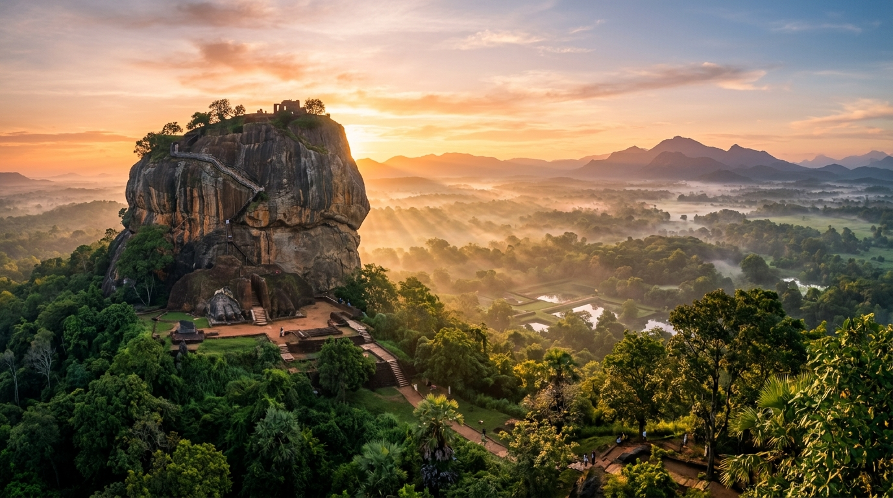
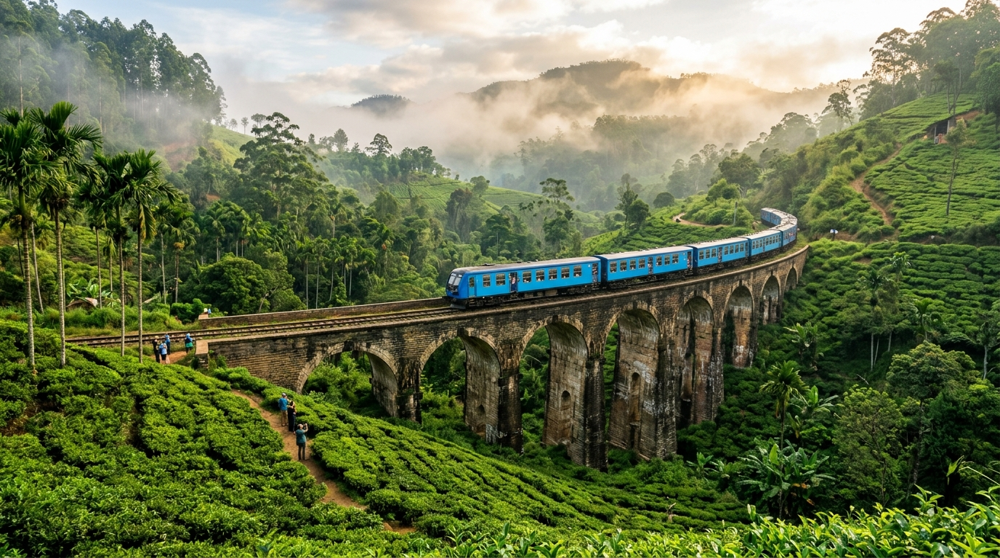
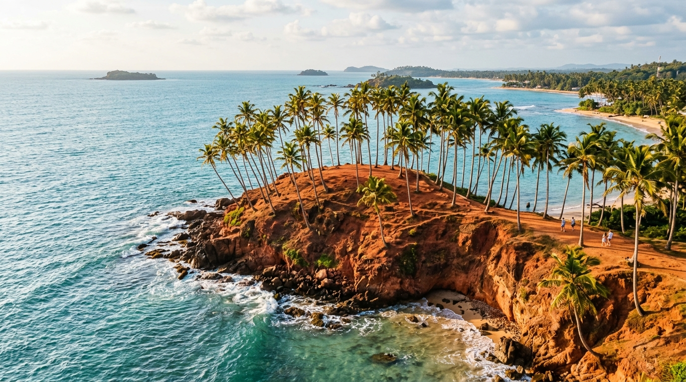
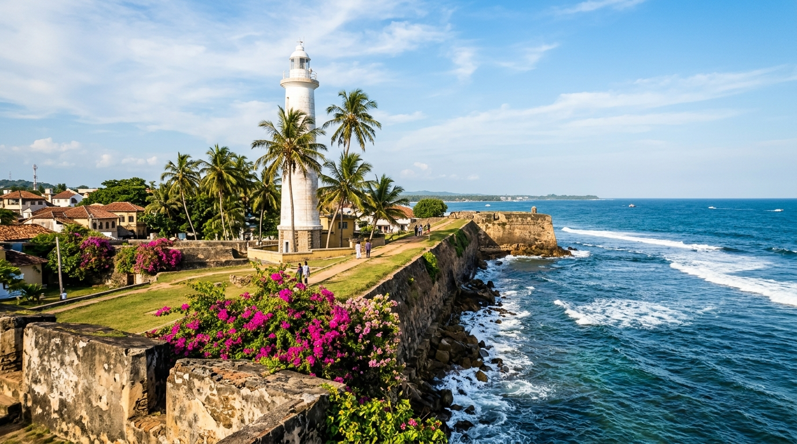
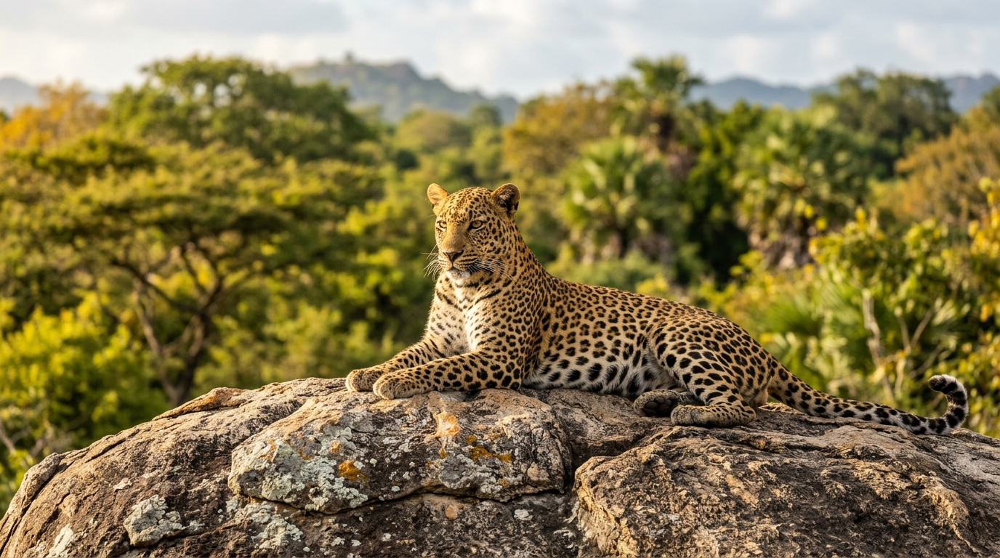
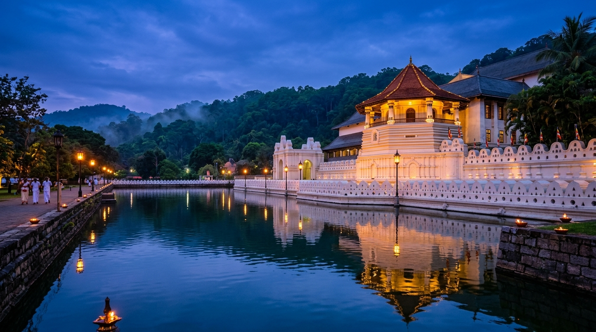

Cultural Triangle
Sigiriya Lion Rock
King Kashyapa's 5th-century sky fortress crowned with sunken palace ruins, mirror walls, frescoes, and symmetrical lotus water gardens.

Within a single morning in Sri Lanka, you can climb a fifth-century sky palace above misty jungle canopy, board a cobalt-blue train through high-grown tea estates, and watch Indian Ocean rollers break against coral ramparts at dusk.
Filter by geography to inspect transit logistics, ideal months, and insider field notes—or bookmark stops directly into your custom trip estimator.
King Kashyapa's 5th-century sky fortress crowned with sunken palace ruins, mirror walls, frescoes, and symmetrical lotus water gardens.

Tea HighlandsRide the legendary Kandy-to-Ella mountain railway past waterfalls and emerald tea estates to colonial stone viaducts and Little Adam's Peak.

Southern CoastGolden crescent coves, reef-sheltered surf breaks, red-laterite palm headlands, and seasonal blue whale migrations just offshore.

Heritage CoastA living 16th-century walled quarter where coral-stone bastions, spice-merchant mansions, independent ateliers, and ocean sunsets converge.

Wild ParksGraniteinselbergs, brackish lagoons, sloth bears, Asian elephants, and one of Earth's highest densities of wild leopards.

Sacred Hill CapitalThe last royal capital of Sinhala kings, cradling Kandy Lake, Peradeniya Royal Botanical Gardens, and the revered Sri Dalada Maligawa.
Compact distances mean never losing whole days to domestic flights. Select an itinerary duration or click any waypoint on the island map.
Sri Lanka's central mountains split two opposite monsoons (Maha & Yala). While one coast sees tropical showers, the opposite shoreline basks in calm blue skies.
Inter-monsoon showers clear toward crisp mornings; southern bays open for whale watching and early-season surf.
Pack breathable linen for humid coastal afternoons, a light rain shell for brief dusk showers, and a warm fleece layer for 14°C nights in Nuwara Eliya.
True cinnamon (Cinnamomum verum) is native to Sri Lanka. Pair culinary rituals with practical logistics for seamless independent travel.
Crisp, lacy fermented rice-flour and coconut-milk crepes cradling a soft-yolk egg—served hot off iron pans with fiery caramelized onion seeni sambol.
Taste delicate golden-liquor Orange Pekoe in high-elevation Nuwara Eliya (1,868m) versus bold, malty low-grown Ruhuna teas near the southern rainforests.
Slow-simmered jackfruit (polos), smoky southern fish ambul thiyal soured with goraka, tempered red dhal, and fresh grated coconut pol sambol.
Customize your travel style, party size, and saved stops to calculate realistic on-the-ground costs—then copy or print a clean itinerary dossier.
For 2 travelers · 10 days · Boutique & Private Chauffeur tier (excludes international flights)